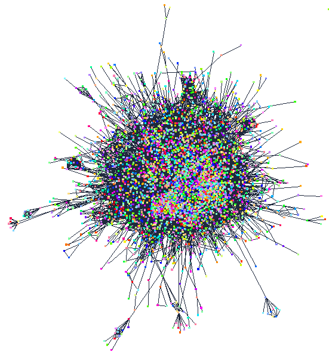
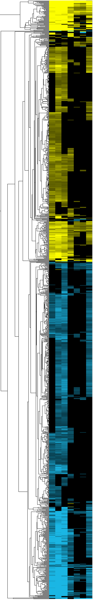
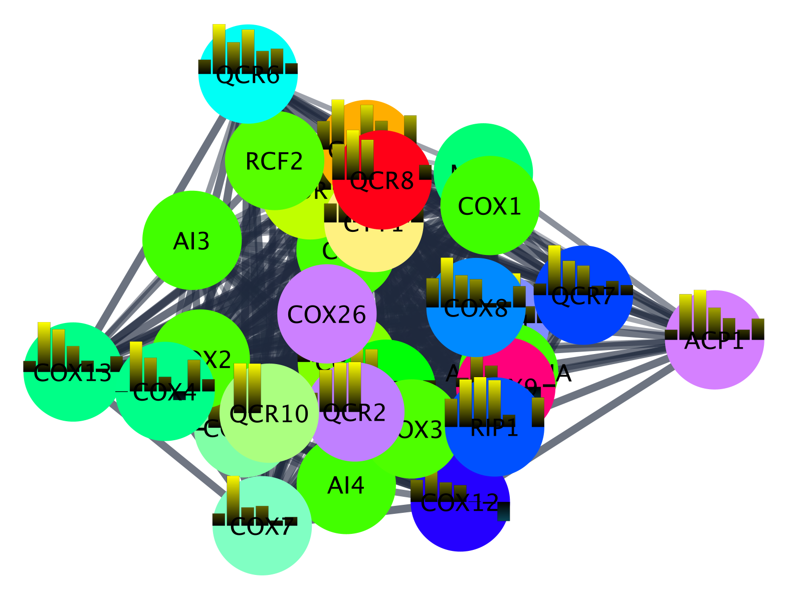

clusterMaker App
clusterMaker is an app that provides the functionalities needed for clustering, dimensionality reduction and ranking. The clusterMaker app for Cytoscape is available from the App Store.
This tutorial will demonstrate how the various algorithms can be used together to explore a data set and how to integrate it with other Cytoscape apps and capabilities.
This workflow uses two types of data; protein-protein interaction data from the STRING database, and expression data from a yeast heat shock experiment. We will combine these two data types in Cytoscape.

Setup
- Install and launch the latest version of Cytoscape.
- Install the clusterMaker 2 app via
Apps → App Manager or directly from the App Store. - Install the stringApp via
Apps → App Manager or directly from the App Store. - Install the Largest Subnetwork App from the Cytoscape App Store, or using the
Cytoscape App Manager . - Download the matrix data for the yeast heat shock experiment.
Importing the PPI network
- Launch Cytoscape, and go to
Import → Network from Public Databases... . - Select STRING: protein query in the
Data source menu, and select Saccharomyces cerevisiae from the Species list. - Select
All proteins of this species . - Select the option for
physical subnetwork and set theConfidence (score) cutoff to 0.50. - Click
Import to load. The network might take some time to load as it is large. - Finally, lets continue our analysis with only the largest connected subnetwork by clicking
Select → Nodes → Largest subnetwork . Next, selectFile → New Network → From Selected Nodes, All Edges .
Importing the PPI network
The network should look like similar to this:
Importing the Expression Data
- Select
File → Import → Table from File and select the text file with the matrix data. - Set the
Key column for the network to display name. - In the
Preview , click on the Gene symbol column header and then click the key symbol, to assign this column as the key column for the data. - Under
Advanced Options , set the delimiter to Tab and turn off COMMA. - Click
OK to import.
Now we have a protein-protein interaction network where each of the proteins are annotated with the 5 minute (GPL51-01), 10 minute (GPL51-02), 15 minute (GPL51-03), 20 minute (repeat) (GPL51-05), 40 minute (GPL51-06), 60 minute (GPL51-07), and 80 minute (GPL51-08) heat shock expression fold changes.
Clustering the PPI Network
Our network is too dense for easy interpretation, so the next step is to break the network up into clusters representing tightly connected groups of proteins such as complexes. We will use Leiden clustering to do this.
- Select
Apps → clusterMaker Cluster Network → Leiden Clusterer (remote) to bring up the Leiden cluster options. - Set the
Resolution parameter to 0.5 andNumber of iterations to 30. - In the
Source for array data section, select stringdb::score as theAttribute . This is the edge confidence score assigned by STRING. - Select
Create new clustered network and clickOK .
Clustering the PPI Network
The resulting network should look similar to this. Note that we have disabled the
Exploring Leiden Clusters
We can explore some of the clusters to confirm that Leiden has done a reasonable job. To do this, we will run functional enrichment analysis on the individual clusters.
- Select the first cluster (top left) by click and drag, then select
Functional enrichment in the STRING results panel at the right. - Select genome for
Network to be used as background and clickOK to continue. - The results will open in the
STRING Enrichment table, sorted by FDR value. In the case of cluster 1, it is clear from the description of enriched terms that the cluster represents the proteins in the ribosome. - Repeat the process with the next 3 clusters.
You will notice that the top 4 clusters represent the ribosome, preribosome, large subunit of the preribosome, and the mitochondrial ribosome, respectively. Based on this, we can assume that Leiden clustering worked reasonably well.
Hierarchical Clustering of Expression Data
A classical analysis of an expression data set would involve performing a hierarchical clustering of the data and viewing it using a heatmap with associated dendrogram. We can do this using clusterMaker2 using the
- Select
Apps→clusterMaker Cluster Attributes → Hierarchical cluster . - Select all of the heat shock columns (5 min, 10 min, 15 min, 20 min repeat, 40 min, 60 min, and 80 min).
- Select
Show TreeView when complete and clickOK .
Hierarchical Clustering of Expression Data
This will bring up a heat map with the associated dendrogram for the data set. By selecting branches of the dendrogram, we can select groups of genes in the heatmap and simultaneously select the corresponding proteins in the PPI view.
By selecting branches of the dendrogram, we can select groups of genes in the heatmap and simultaneously select the corresponding proteins in the PPI view.
Coloring the PPI Network
To help understand the biological significance of these transcriptional changes at the protein level, we would like to find a mapping from our hierarchical clustering onto the proteins in our PPI network. This could be useful, for example, to see if any particular complexes are particularly affected by transcriptional changes. There are two ways of doing this:
- In TreeView, select
Map Colors Onto Network... . - Select all attributes in the
Attribute List , making sure they are in the correct order, and clickCreate HeatStrips .
This will add bar charts showing the expression fold changes at the various timepoints on the nodes. Unfortunately, this is extremely hard to see when looking at the entire network.
Coloring the PPI Network
The second way to color the network is to use the information from the hierarchical clustering to create a new attribute, and then use this for coloring. We will use the ability to select branches of the dendrogram to select the corresponding nodes in the network.
- In TreeView, ......
- ...
UMAP analysis of Expression Data
We will now look at the same heat shock expression data used for the hierarchical cluster, but this time using the Uniform Manifold Approximation and Projection (UMAP) approach to explore a 2D embedding of this multidimensional data.
- Select all nodes with a color value or a “Non-Zero Count” 1 or greater (you can sort the column or use the Cytoscape Filter tab).
- Select
Apps → clusterMaker Dimensionality Reduction → UMAP (remote) . - Select all six of the heat shock columns, select
Only use data from selected nodes and set theNumber of neighbors to 20 and theMinimum distance to 0.5. - Select
Show scatter plot with results and clickOK . - Once the UMAP scatter plot comes up, click on
Get Colors to apply the red-blue coloring from the nodes to the UMAP.
UMAP analysis of Expression Data
...
Fuzzy Clustering
....
Fuzzy Clustering
....
Cluster Ranking
...
Cluster Ranking
...
Summary
...